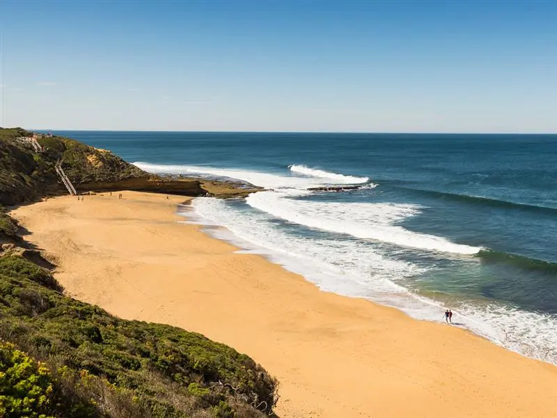
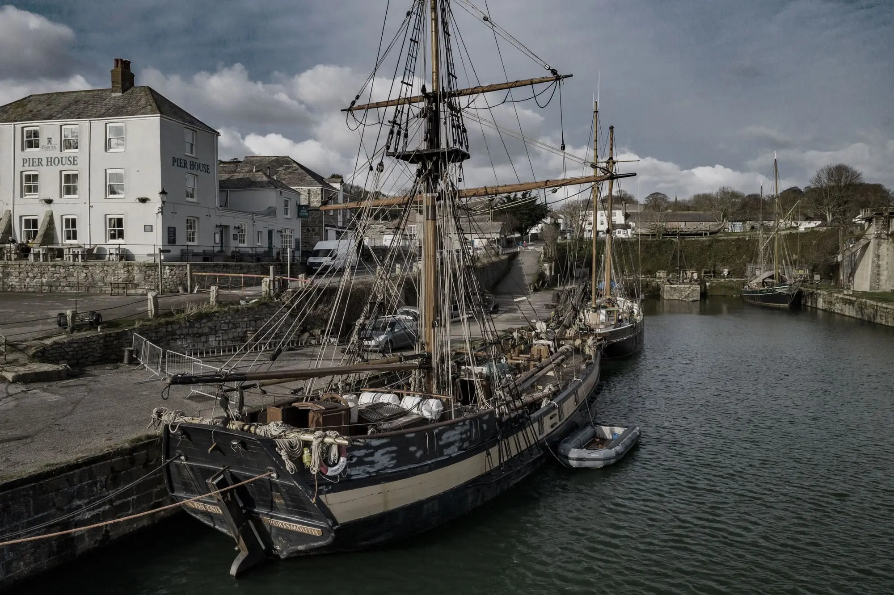
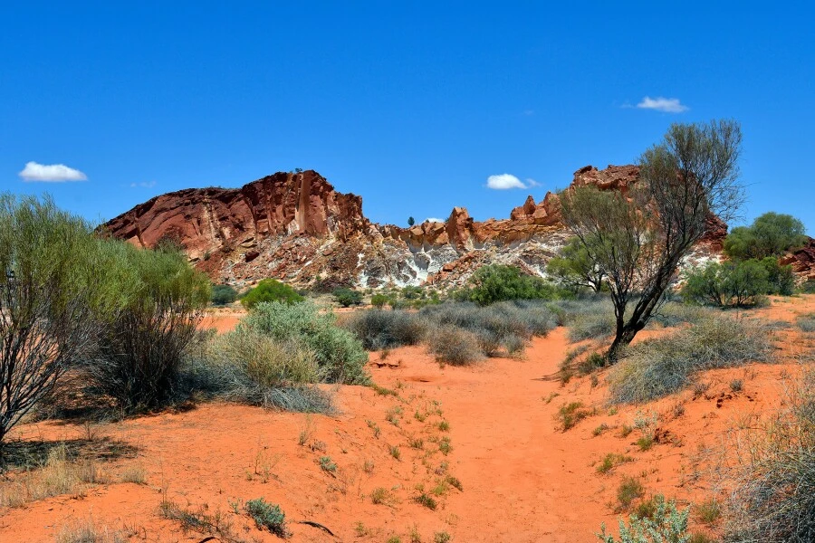

Through the lens of the Crown Series, we invite you to
explore Australia’s timeless beauty — from rugged coastlines to
historical townships. Each story captures a moment in time, where nature
and heritage meet.
Royal Coastline — Victoria

Waves crash beneath the watchful gaze of century-old lighthouses
along Victoria’s southern edge.
The Royal Coastline stands as one of Victoria’s most iconic
landscapes. With its dramatic cliffs, wind-sculpted rock formations,
and historical lighthouses, this region tells a story of endurance and
discovery.
From the Great Ocean Road to the charming fishing villages scattered
along the coast, each photograph unveils a harmony between human
history and the wild ocean frontier.
Sunrise Over Historic Harbour

Gentle light spills over sandstone facades and still waters in
Australia’s oldest harbour precinct.
As dawn breaks over the harbour, the city’s colonial roots are
revealed in soft gold hues. Cobblestone paths and iron balconies
whisper stories of merchants, sailors, and settlers who once walked
these shores.
This collection captures both serenity and history — moments where the
past breathes within the rhythm of modern Sydney.
Desert Trails of the Outback

Endless horizons and red earth — where silence speaks louder than
any city.
Deep in the Australian Outback, the land tells ancient stories etched
into every ridge and stone. As the sun dips low, long shadows stretch
across dunes painted in crimson and gold.
This series explores the spirit of isolation and resilience found in
Australia’s vast interior. Each frame reflects the untamed beauty and
quiet strength of the people and wildlife who call this land home.
From the sacred grounds near Uluru to forgotten desert tracks, these
photographs celebrate the timeless rhythm of the Outback — raw,
majestic, and eternal.